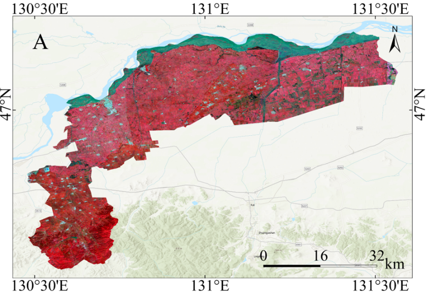
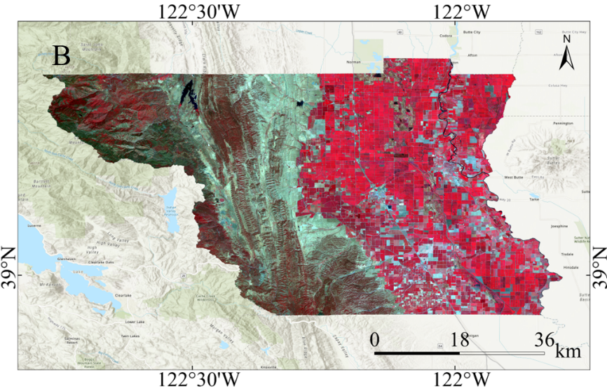
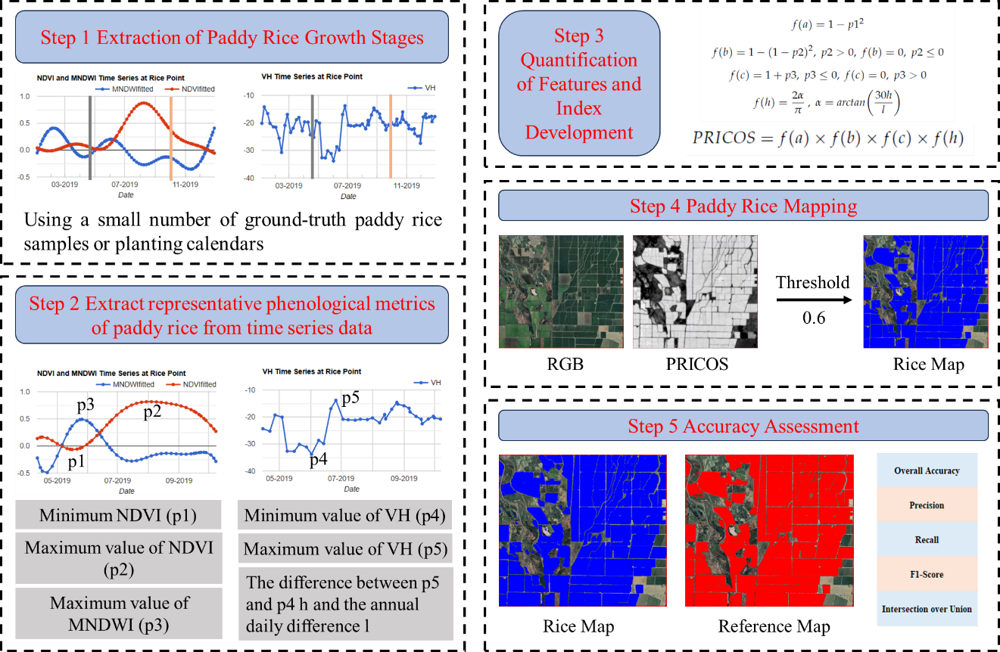
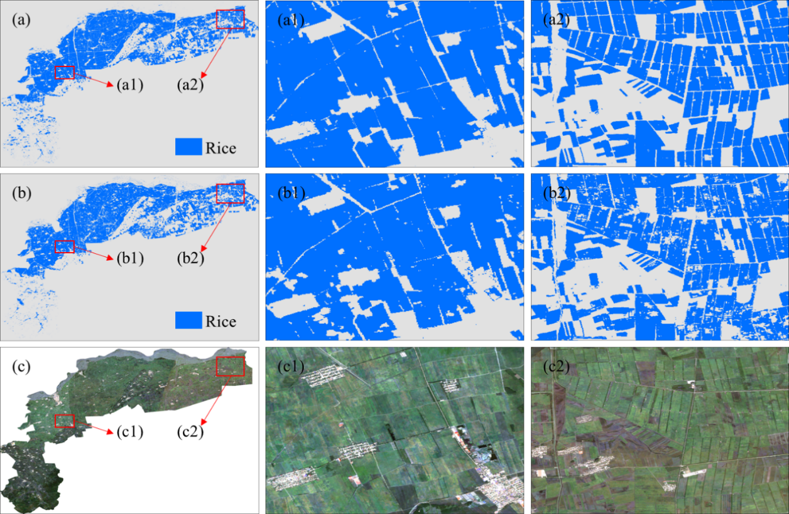
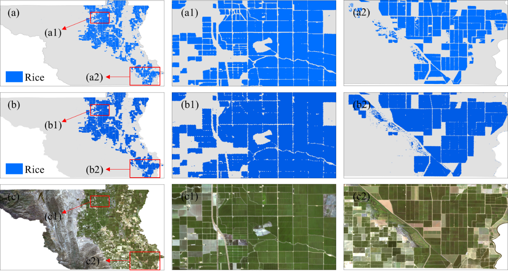

18 Efficient and Reliable Paddy Rice Classification
18.1 Introduction
Paddy rice is a key component of global food security, particularly in Asia, where it serves as the staple food for billions of people and sustains rural livelihoods [1]. However, rice cultivation is resource intensive, requiring substantial irrigation and contributing significantly to methane emissions [2]. Timely and accurate information on the distribution of paddy rice is therefore essential for production monitoring, environmental sustainability, water resource management, and climate change mitigation [3].
This section introduces a paddy rice identification index that combines optical and Synthetic Aperture Radar (SAR) features—PRICOS (Paddy Rice Index Combining Optical and SAR features) [4], which integrates optical data with Synthetic Aperture Radar (SAR) observations. By combining these data sources, PRICOS reduces common challenges in remote sensing, such as cloud cover and speckle noise, thereby improving classification reliability. Using time-series data from Sentinel-1 and Sentinel-2, the method identifies key rice phenological stages and can perform effectively even in areas with limited ground samples. PRICOS enhances the timeliness, spatial resolution, and reliability of rice statistics, providing support for agricultural planning and policy development.
18.2 Experimental Area and Data
PRICOS was validated in two experimental areas, as shown in Figure 18.1 and Figure 18.2. Site A is Huachuan County, Jiamusi City, Heilongjiang Province, China (130°16′–131°34′E, 46°37′–47°14′N), with an area of approximately 2,268 km². It is a typical single-cropping rice area in Northeast China. The terrain is flat, and the region has a temperate continental monsoon climate, with an average annual temperature of about 3.5 °C and annual precipitation of around 550 mm. A single-cropping rice system is practiced, with transplanting usually in mid-May and harvesting in early October.
Site B is Colusa County, California, United States (121°47′–122°47′W, 38°55′–39°24′N), covering an area of approximately 2,995 km². It is located in the Sacramento Valley, one of the major rice-producing regions in the United States. The area has a Mediterranean climate, characterized by hot, dry summers and mild, wet winters. The average annual temperature is about 16.5 °C, and annual precipitation is around 400 mm, mainly from November to March. A single-cropping rice system is also practiced here, with sowing generally from late April to early May and harvesting from late September to early October.

The input data for this case study consists of Sentinel-1 Synthetic Aperture Radar (SAR) images covering the rice-growing season in 2019 and Sentinel-2 multispectral images from the corresponding period. For Sentinel-1, data selection was based on the Interferometric Wide (IW) mode and descending orbit, with only VH polarization retained. Speckle noise was addressed using local mean and variance within a 7×7 neighborhood, with the signal-to-noise ratio (SNR) calculated as the ratio of variance to the squared mean. Pixels with SNR greater than or equal to 1 were masked to suppress high-noise areas, and a Gaussian kernel was subsequently applied for smoothing. The images were reprojected to a unified coordinate system and spatial resolution (Coordinate reference system: WGS 1984 (EPSG:4326). Spatial resolution: 10 m), clipped to the study area, and augmented with a day-of-year (DOY) band for time-series analysis.
For Sentinel-2 optical imagery, cloud masking was performed using the cloud probability band (cs_cdf) provided by Google Cloud Score Plus, retaining pixels with cs_cdf values greater than or equal to 0.5. For each acquisition, the Normalized Difference Vegetation Index (NDVI) and the Modified Normalized Difference Water Index (MNDWI) were calculated. A third-order harmonic regression model was then applied to generate smoothed NDVI and MNDWI time-series curves.
18.3 Methods
As shown in Figure 18.3, the PRICOS mapping framework consists of five main steps:
Step 1: Determine the rice growth period based on a limited number of samples. Specifically, the mean NDVI, MNDWI, and VH time series were derived from a small set of paddy rice sample points in GEE. By combining the water signal during the transplanting stage with the vegetation signal during the maturity stage, the sowing phase was defined as the 15 days prior to the point when MNDWI exceeded 0 and VH began to show a rapid decline. Subsequently, the maturity–harvest phase was defined as the period when NDVI decreased from its maximum value to 0.3. The duration from the onset of sowing to the end of harvest was defined as the rice growth period. For regions with available rice cropping calendars, the corresponding period was directly specified in the code.
Step 2: Extract seven key phenological indicators from the smoothed time series: the minimum NDVI during the transplanting stage (p1), the maximum NDVI during the peak growth stage (p2), the maximum MNDWI during the transplanting stage (p3), the minimum VH during the transplanting stage (p4) along with its corresponding day of year (\({p4}_{doy}\)), and the maximum VH during the peak growth stage (p5) along with its corresponding day of year (\({p5}_{doy}\)).
Step 3: Define four normalization functions—f(a), f(b), f(c), and f(h)—based on the extracted phenological features, and construct the PRICOS index through their multiplicative combination. The formulas are defined as follows: \[ f(a) = 1 - {p1}^{2} \] \[ f(b) = 1 - (1 - p2)^{2},p2 > 0,\ \ f(b) = 0,\ p2 \leq 0 \] \[ f(c) = 1 + p3,p3 \leq 0,\ \ f(c) = 0,\ p3 > 0 \]
\[ f(h) = \frac{2\alpha}{\pi},{\alpha = arctan}\left( \frac{30h}{l} \right),h = p5 - p4,l = {p5}_{doy} - {p4}_{doy} \] \[ PRICOS = f(a) \times f(b) \times f(c) \times f(h)\ \] Step 5: Validate the results using reference datasets from China and the United States. In China, the 10-meter resolution paddy rice dataset constructed by Shen et al. [[5]] was used. In the United States, the 30-meter resolution Cropland Data Layer (CDL, https://croplandcros.scinet.usda.gov/) served as the reference. Classification accuracy was evaluated using five commonly adopted metrics: Overall Accuracy (OA), Precision, Recall, F1-Score, and Intersection over Union (IoU).

The validation procedure was conducted as follows: first, clip both the predicted paddy rice map and the reference map using the same administrative boundary to ensure spatial consistency; next, resample all data to a uniform spatial resolution of 10 meters; finally, conduct a pixel-wise comparison (1 for paddy rice, 0 for non-rice) to calculate the accuracy metrics.
18.4 Results
Table 18.1 summarizes the classification accuracy metrics for Sites A and B, including IoU, OA, Precision, Recall, and F1-Score. The results indicate that the PRICOS method achieved high classification performance in both regions. Specifically, IoU values for Sites A and B were 0.8237 and 0.8682, respectively, indicating a high spatial agreement between the predicted and reference paddy rice distributions. The OA values reached 0.9678 at Site A and 0.9838 at Site B, showing that over 96% of pixels were correctly classified, with overall classification errors being minimal. Regarding Precision, the values of 0.8812 (Site A) and 0.9720 (Site B) suggest that between 88% and 97% of pixels classified as paddy rice correspond to actual rice areas, implying a low false positive rate. Recall values were 0.9267 and 0.8905, respectively, suggesting that 89%–93% of the actual paddy rice pixels were successfully detected by the model, with a controlled false negative rate. The F1-Scores were 0.9034 and 0.9295, reflecting a well-balanced trade-off between Precision and Recall. Comparatively, the classification results for Site B outperformed Site A, which may be partly attributed to differences in reference data quality.
| Experimental area | IoU | OA | Precision | Recall | F1 score |
|---|---|---|---|---|---|
| A | 0.8237 | 0.9678 | 0.8812 | 0.9267 | 0.9034 |
| B | 0.8682 | 0.9838 | 0.9720 | 0.8905 | 0.9295 |


In this study, a threshold of 0.6 was applied to the PRICOS-derived maps for paddy rice extraction. Since the PRICOS results represent normalized probabilities of rice cultivation, with values closer to 1 indicating a higher likelihood of paddy rice, researchers may adjust this threshold according to specific mapping requirements.
Figure 18.4 and Figure 18.5 present the paddy rice distribution maps for Sites A and B extracted using a 0.6 threshold. Compared with the reference maps and satellite imagery, PRICOS demonstrated high reliability in both regions. At the field scale, Site A showed particularly accurate delineation. Although some paddy rice pixels were missed in Site B, the high spatial resolution of the satellite imagery allowed for relatively precise depiction of field boundaries. Specifically, in Site A, PRICOS successfully reconstructed complete rectangular paddy rice fields with clear boundaries, as shown in Figure 18.4 (a1) and (a2), consistent with field features visible in satellite imagery (Figure 18.4 (c1) and (c2)). In contrast, the TWDTW-derived reference map exhibited patchy “gaps” and isolated small areas, with some actual rice fields omitted (Figure 18.4 (b1) and (b2) [5]. In Site B, PRICOS captured field boundaries more accurately in the northern zoomed-in area as shown Figure 18.5 (a1) and (a2), as confirmed by both satellite imagery, as per Figure 18.5 (c1) and (c2), and the CDL reference map, shown in Figure 18.5 (b1) and (b2). In the southern zoomed-in area (Figure 18.5 (a2)), some paddy rice pixels were still missed, indicating minor under-detection in that region.
18.5 Discussion
PRICOS offers significant practical value within agricultural statistical systems, mainly in the following three aspects:
Improving estimation accuracy and adaptability: By integrating optical and SAR time-series data, PRICOS effectively overcomes common limitations in remote sensing, such as cloud cover and complex terrain. Compared with traditional methods, this approach provides a substantial improvement in overall accuracy. It offers a reliable and efficient technical solution for large-scale paddy rice area estimation, while greatly reducing the manpower and time required for field surveys.
Promoting standardization and automation of monitoring workflows: Conventional rice mapping methods often rely on empirical thresholds or complex parameter tuning, limiting their general applicability. PRICOS extracts key phenological features using harmonic fitting, ensuring stable performance across different agricultural landscapes. This facilitates the establishment of unified national remote sensing monitoring standards and automated processing workflows, enhancing the consistency and sustainability of monitoring operations.
Supporting resource management and the development of a green statistical system: Rice cultivation is closely linked to methane emissions and water resource consumption. With a high spatial resolution of 10 meters and frequent temporal coverage, PRICOS enables detailed mapping of dynamic changes in rice-growing areas. It provides critical data for farmland protection, carbon emission accounting, and irrigation optimization, laying the foundation for an environmentally oriented agricultural statistical system.
Extensive validation across multiple regions yielded the following key findings and suggested future improvements:
Multi-source feature fusion enhances classification performance: The combined use of NDVI, MNDWI, and VH backscatter significantly improved rice classification accuracy, confirming the effectiveness of multi-source data integration.
Regional differences in SAR feature applicability: SAR-based indicators performed well in flat terrain but were prone to confusion with wetland vegetation in complex or fragmented landscapes. Introducing terrain correction and auxiliary optical validation is recommended to enhance applicability in heterogeneous environments.
Lightweight design suitable for areas with scarce samples: PRICOS constructs models based on time-series features without requiring extensive ground samples, ensuring high transferability and robustness. This makes it particularly suitable for areas with limited samples and highlights its potential for global rice monitoring.
Limitations due to dependence on optical data: The harmonic fitting process relies heavily on high-quality optical time-series data, which may be affected in regions with persistent cloud cover. Future research should explore SAR-dominated alternatives to strengthen all-weather monitoring capabilities.
Adaptive strategies for regions with diverse phenology: In mountainous or phenologically heterogeneous areas, feature extraction strategies should be dynamically adjusted based on local cropping calendars to improve regional adaptability and classification accuracy.
18.6 Conclusions
This study demonstrates that the PRICOS method, which integrates optical and SAR time-series features, enables efficient and reliable identification and mapping of paddy rice. In two representative study areas—Huachuan County, China, and Colusa County, United States—PRICOS achieved excellent classification accuracy, with IoU values of 0.8237 and 0.8682, OA values of 0.9678 and 0.9838, and F1-scores above 0.90. These results indicate that PRICOS provides stable performance and strong generalization capability. In addition, PRICOS does not rely on extensive ground samples, offering advantages of being lightweight and highly transferable, which makes it particularly suitable for application in regions with limited field data.
18.7 Code and data availability
The PRICOS code is available in the GitHub link. Due to the large amount of input data, only part of Colusa County is shown. In this study, Python 3.12 was used. The main code was developed and executed in a Windows 11 environment, relying on multiple third-party libraries for remote sensing image reading, processing, visualization, and classification accuracy evaluation. To ensure stability and compatibility in spatial data processing, it is recommended to create a virtual environment on the Anaconda platform for unified management of library versions.
The code is also available in Google Earth Engine (GEE). Due to GEE memory limitations, only part of Colusa County is shown.
References
[1]
FAO, World Food and Agriculture – Statistical Yearbook 2021. FAO ;, 2021.
[2]
X. Yan, H. Akiyama, K. Yagi, and H. Akimoto, “Global estimations of the inventory and mitigation potential of methane emissions from rice cultivation conducted using the 2006 Intergovernmental Panel on Climate Change Guidelines,” Global Biogeochemical Cycles, vol. 23, no. 2, 2009, doi: 10.1029/2008GB003299.
[3]
L. Carrasco, G. Fujita, K. Kito, and T. Miyashita, “Historical mapping of rice fields in Japan using phenology and temporally aggregated Landsat images in Google Earth Engine,” ISPRS Journal of Photogrammetry and Remote Sensing, vol. 191, pp. 277–289, 2022, doi: 10.1016/j.isprsjprs.2022.07.018.
[4]
Y. Lou et al., “PRICOS: A Robust Paddy Rice Index Combining Optical and Synthetic Aperture Radar Features for Improved Mapping Efficiency,” Remote Sensing, vol. 17, no. 4, p. 692, 2025, doi: 10.3390/rs17040692.
[5]
R. Shen et al., “High-resolution distribution maps of single-season rice in China from 2017 to 2022,” Earth System Science Data, vol. 15, no. 7, pp. 3203–3222, 2023, doi: 10.5194/essd-15-3203-2023.